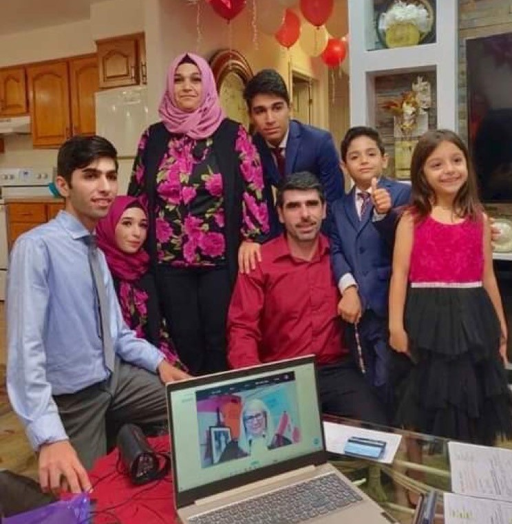
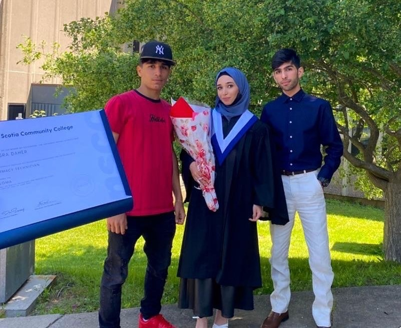
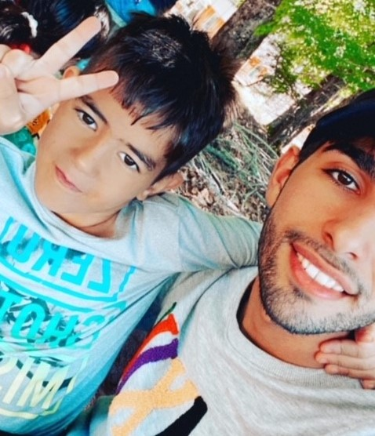

About Me
  My name is Mohamad Taha Daher. I am a junior programmer. Currently, I am pursuing a diploma in IT Programming at Nova Scotia Community College. My creative and enthusiastic methods of solving problems led me to select a career as a programmer.
My home country is Syria. I was born on January 1, 2003, in Homs. I lived in Syria for nine years and then moved to Lebanon. I lived in Lebanon for five years and then immigrated to Canada. My native language is Arabic but also, I can speak English.
When I came to Canada, I did not speak any English or knew anything about my new country. My English has improved dramatically since then and still. I recently graduated from high school on the high honor list and became a Canadian citizen and I am so proud of what I have accomplished just in the past few years of my life.
I am a very friendly person and I love meeting new people from different backgrounds. I love to play badminton and soccer. The next goal I would like to do is to start going to the gym. However, I am not sure if I will be able to do it as school is taking most of my time.
I am eager to take the next step in my career at a company that will allow me to continue growing professionally, develop meaningful relationships, and get excited about the work I am doing on a day-to-day basis. Now that we have covered the basics, let me dive into what makes me tick.
I hope this has given you a small glimpse into who I am, but I encourage you to explore the rest of my portfolio to learn more about myself, my goals as well as my skills.